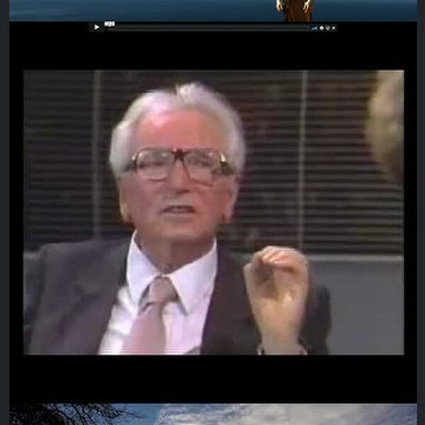

Westland Warrior #2: Introduction
Finding Joe Sun Tzu: Victorious warriors win first and then go to war, while defeated warriors go to war first and then seek to win. Viktor Frankl Viktor E. Frankl: Don't aim at success. The more you aim at it and make it a target, the more you are going to miss it. For success, like happiness, cannot be pursued; it must ensue, and it only does so as the unintended side effect of one's personal dedication to a cause greater than oneself or as the by-product of one's surrender to a person other than...
Read